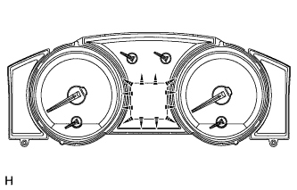

METER / GAUGE SYSTEM > OPERATION CHECK |
| INSPECT INDICATOR/WARNING LIGHT |
Check the following indicators and warning lights.
| Indicator/Warning Light | Switch Condition | Specified Condition |
| A/T OIL TEMP warning light*1 | Engine switch off → on (IG) | Comes on for 3 seconds |
| BRAKE warning light | ||
| ABS warning light | ||
| T-BELT indicator light*2, *3, *4 | ||
| OIL LEVEL indicator light | ||
| Downhill assist control indicator light*5, *6, *7 | ||
| FUEL FILTER & SEDIMENTER indicator light*7 | ||
| SLIP indicator light*8 | ||
| VSC OFF indicator light*8 | ||
| WASHER indicator light | ||
| RSCA OFF indicator light*9 | ||
| CRAWL indicator light*4, *5 | ||
| SPEED LIMIT indicator light*3 | ||
| SRS warning light | Engine switch off → on (IG) | Comes on for 6 seconds |
| CHARGE warning light | Engine switch off → on (IG) | Illuminates when engine switch is turned on (IG). Turns off when engine is started. |
| MIL |
| Indicator/Warning Light | Switch Condition | Specified Condition |
| BRAKE warning light | Engine switch off → on (IG) | Comes on for 3 seconds |
| ABS warning light | ||
| SLIP indicator light | ||
| RSCA OFF indicator light*1 | ||
| CRAWL indicator light | ||
| Downhill assist control indicator light*2, *3, *4, *5, *6 | ||
| SPEED LIMIT indicator light*7 | ||
| PCS indicator light*4, *5 | ||
| SRS warning light | Engine switch off → on (IG) | Comes on for 6 seconds |
| CHARGE warning light | Engine switch off → on (IG) | Illuminates when Engine switch is turned on (IG). Turns off when engine is started. |
| MIL |
| INSPECT SPEEDOMETER |
Using a speedometer tester, check that the speedometer reading is within the allowable range shown in the table below. Also, check for proper operation of the odometer.
| Standard Indication | Acceptable Range |
| 20 mph | 18.5 to 22 mph |
| 40 mph | 39.5 to 42.5 mph |
| 60 mph | 59.5 to 63 mph |
| 80 mph | 80.5 to 84.5 mph |
| 100 mph | 100.5 to 105.5 mph |
| 120 mph | 119.5 to 126 mph |
| 140 mph | 141 to 147 mph |
| Standard Indication | Acceptable Range |
| 20 km/h | 21 to 25 km/h 17.5 to 21.5 km/h*1 |
| 40 km/h | 41.7 to 46.2 km/h 38 to 42 km/h*1 |
| 60 km/h | 62.7 to 67.2 km/h 58 to 63 km/h*1 |
| 80 km/h | 83.4 to 88.4 km/h 78 to 84 km/h*1 |
| 100 km/h | 104.3 to 109.3 km/h 98.5 to 104.5 km/h*1 |
| 120 km/h | 125.1 to 130.6 km/h 119 to 125 km/h*1 |
| 140 km/h | 145.8 to 151.8 km/h 139 to 146 km/h*1 |
| 160 km/h | 166.2 to 173.2 km/h 159 to 167 km/h*1 |
| 180 km/h | 186.9 to 194.5 km/h |
| 200 km/h | 207.7 to 215.7 km/h 199 to 209 km/h*1 |
| 220 km/h | 228.4 to 236.8 km/h 219 to 230 km/h*1 |
| 240 km/h | 249.2 to 258 km/h 239 to 251 km/h*1 |
Check the deflection width of the speedometer indicator.
| INSPECT TACHOMETER |
Connect a tune-up tachometer, and start the engine.
Compare the test results with the tachometer indicator.
| Standard indication (rpm) | Acceptable range Data in ( ) is for reference |
| 700 | 630 to 770 |
| 1000 | (900 to 1100) |
| 2000 | (1850 to 2150) |
| 3000 | 2800 to 3200 |
| 4000 | (3800 to 4200) |
| 5000 | 4800 to 5200 |
| 6000 | (5750 to 6250) |
| Standard indication (rpm) | Acceptable range Data in ( ) is for reference |
| 700 | 630 to 770 |
| 1000 | (900 to 1100) |
| 2000 | (1850 to 2150) |
| 3000 | 2800 to 3200 |
| 4000 | (3800 to 4200) |
| 5000 | 4800 to 5200 |
| 6000 | (5750 to 6250) |
| INSPECT METER/GAUGE |
Connect the intelligent tester to the DLC3.
Perform Active Test (Click here).
| INSPECT WARNING/INDICATOR LIGHT |
Connect the intelligent tester to the DLC3.
Perform Active Test (Click here).
| INSPECT ENGINE OIL LEVEL WARNING |
Turn the engine switch on (IG) and warm up the engine at an engine speed of 2000 rpm or less until the coolant temperature reaches approximately 80°C (176°F) or more.
Disconnect the engine oil level sensor connector for 40 seconds or more.
Turn the engine switch on (IG) and check the multi-information display.
| INSPECT MULTI-INFORMATION DISPLAY (w/ Multi-information Display) |
Connect the intelligent tester to the DLC3.
 |
Perform Active Test (Click here).